Mods
Every mod here I installed and played myself. Nothing is recommended just because it looks good on a download page. Click a card to open the download page.
Showing 16 of 16 entries.
Install first — performance
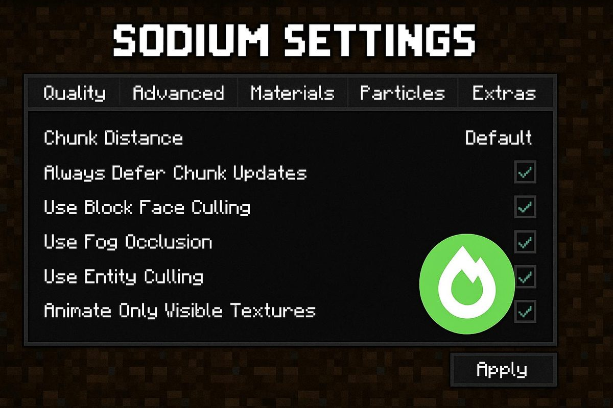
Sodium
No explanation needed — install it before any other mod. My old laptop cannot run a modpack without it; with it, the frame rate doubles.
Essential Performance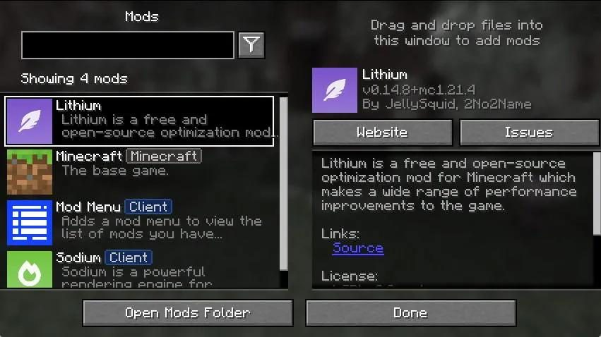
Lithium
Part of the same family as Sodium: it optimises game logic and memory. Install both and stop thinking about it.
Essential Performance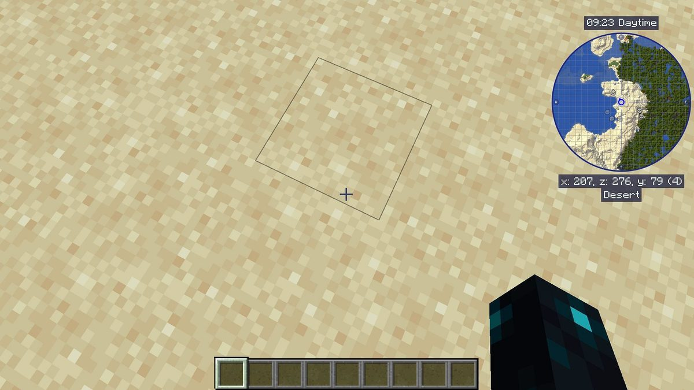
JourneyMap
A minimap that records the terrain automatically and lets you set waypoints. I never explore without it, otherwise I lose my house after two hundred blocks.
Useful Map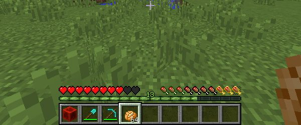
AppleSkin
Shows the real numbers behind the hunger bar, so you stop guessing which food is worth eating. Anyone who plays survival understands.
Useful InterfaceShaders — for people who care about looks
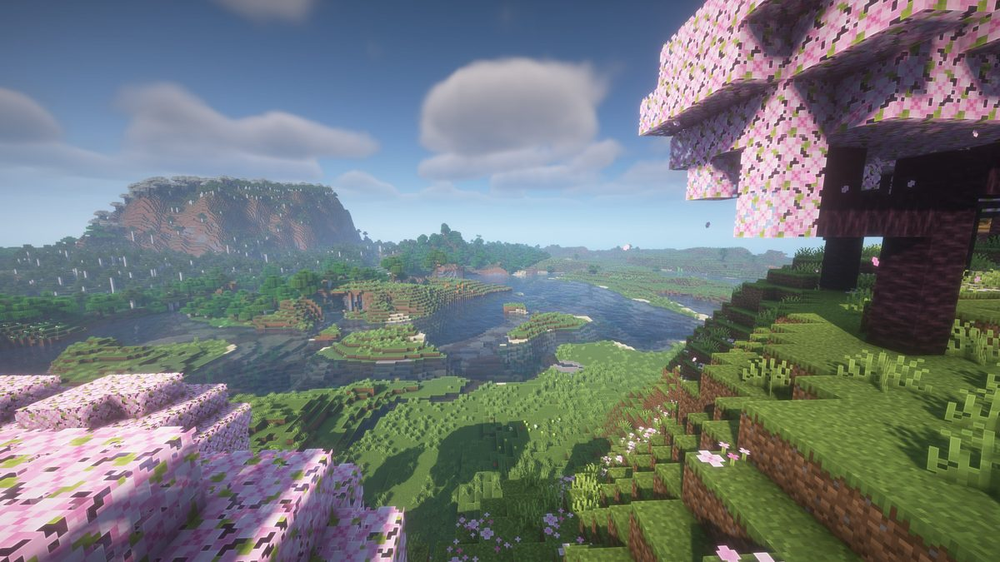
BSL Shaders
The shader pack I used the longest. Warm colours, even brightness, great for builders. A GTX 1050 Ti runs it, which is exactly what my old machine has.
Shaders Mid-range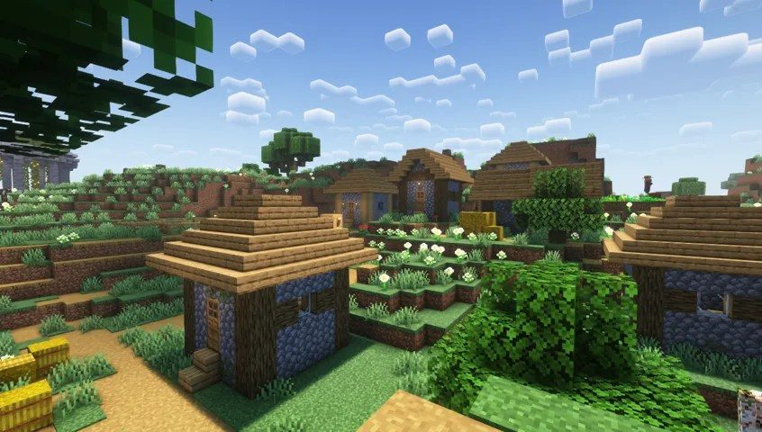
Complementary Reimagined
The best balance of looks and performance: believable colour, leaves that move. This is what I use now, and a GTX 1060 handles it easily.
Shaders Mid-high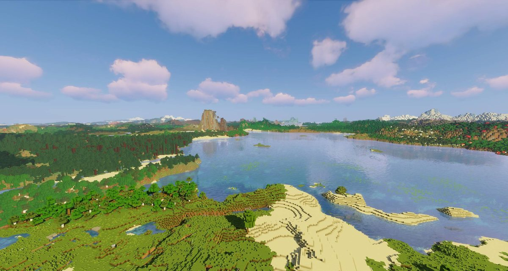
Sildur's Vibrant Lite
A gift to low-end players: several quality levels, and the lowest one runs on integrated graphics. My old laptop cannot do high-end shaders, so this is what I use there.
Shaders Low-end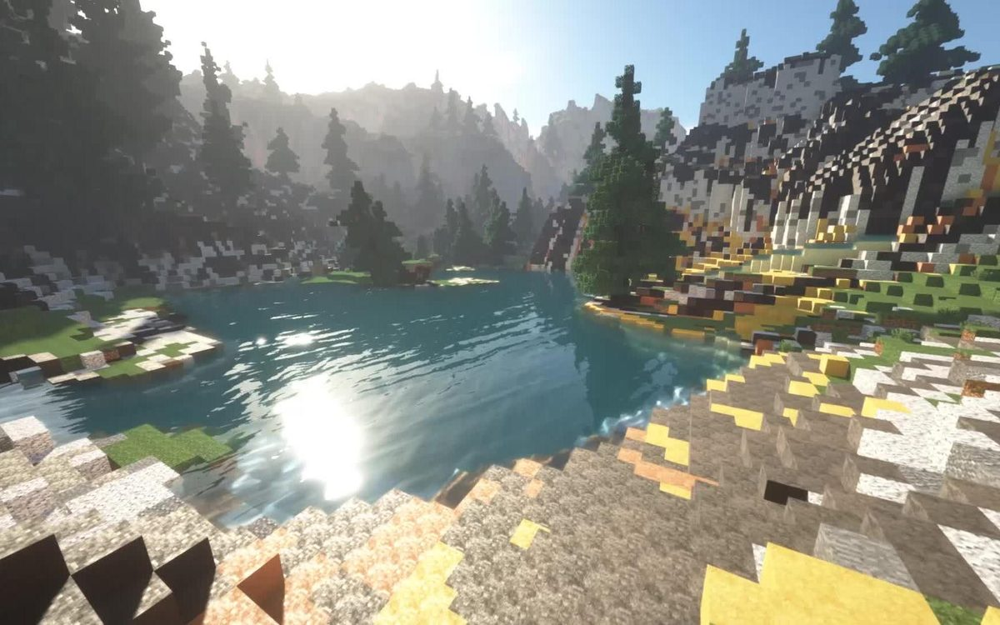
SEUS Renewed
A classic, and the lighting and water still look stunning. Also brutal on hardware: my frame rate drops to 20, so it only goes on for screenshots.
Shaders High-endContent — for when vanilla runs dry
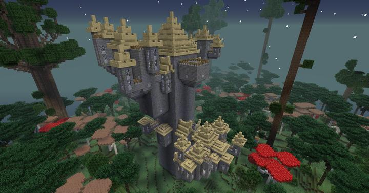
Twilight Forest
Updated to 4.9.3850 last month with villages. An entire dimension locked in permanent dusk, with nine bosses in a fixed order — it plays like an RPG. It took me almost three weeks to finish.
Dimension Boss fights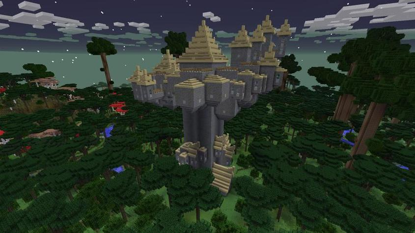
Twilight Forest Epicfied
An add-on that gives twelve Twilight Forest weapons Epic Fight combos. Bosses stop being a standing-still-and-swing contest and become something you have to position for.
Add-on Combat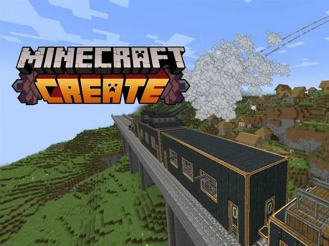
Create
Gears, belts and automation, from automatic farms to self-driving minecarts. I spent a weekend on an automatic sugar cane farm and it was worth every hour.
Automation MachinesYUNG's Better End Island
Redesigns the end island: new obsidian pillars, a different spawn layout and a bell tower that summons the dragon. The walk to the end city is far more interesting afterwards.
Rework The EndHardcore — for people who enjoy pain
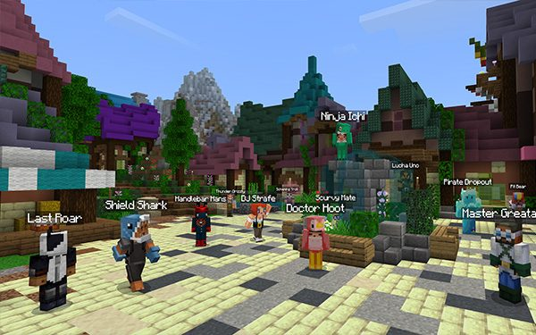
100 Days of Zombies
Zombies evolve every ten days, from slow walkers to bridge-builders that break walls and shrug off fire. I lasted 40 days. At night I did not dare leave the house.
Hardcore Zombies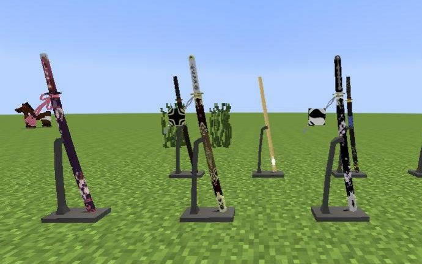
SlashBlade
A katana mod where weapons level up as you use them, with a combo system better than most action games. I started a separate world just for the sword and unlocked the demon blade after enough kills.
Combat Weapons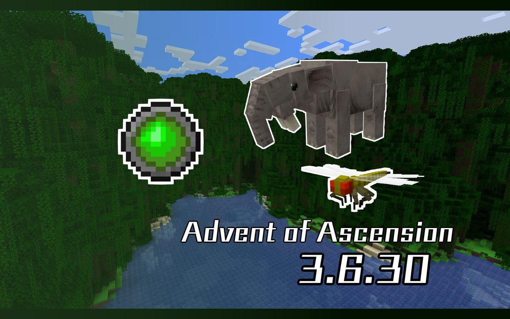
Advent of Ascension
More than twenty dimensions, hundreds of mobs and over a hundred weapons. If vanilla bores you, this is ten times the content — a month will not be enough.
Massive Dimensions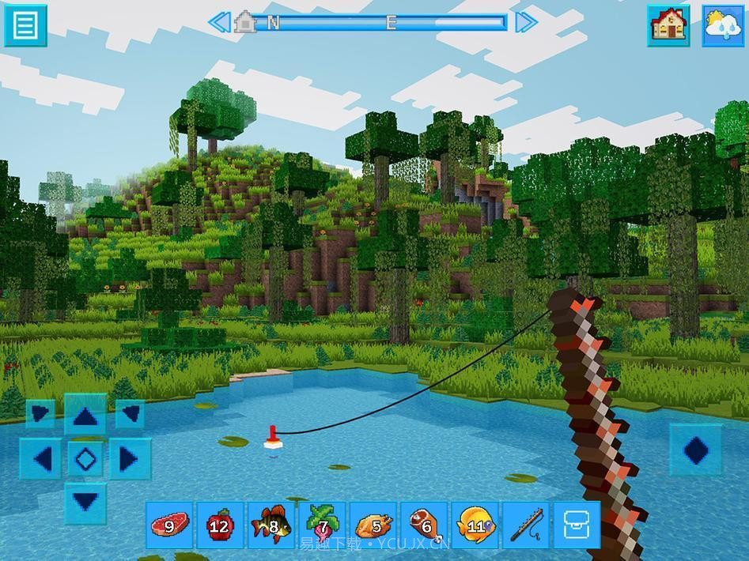
RLCraft
You get thirsty enough to die, break bones when you fall, and monsters wake you up while you sleep. I uninstalled it after a day. Perfect for anyone who likes suffering.
Brutal Survival